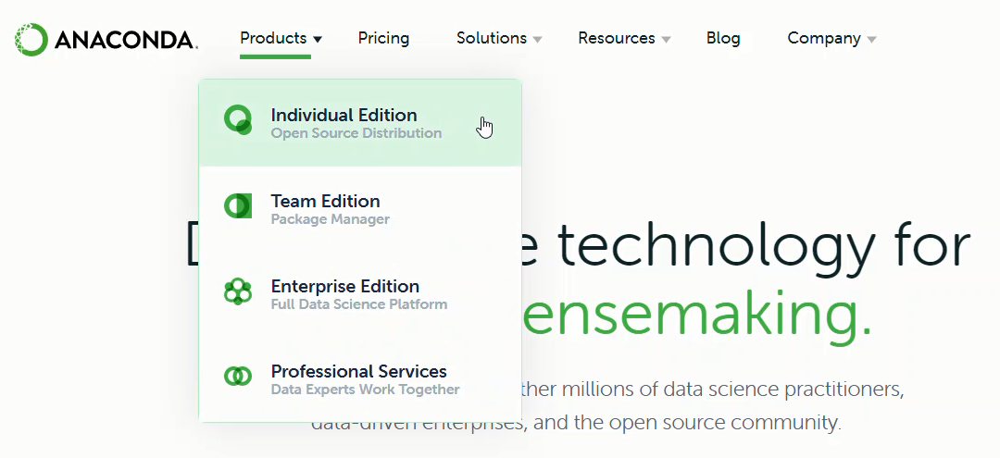
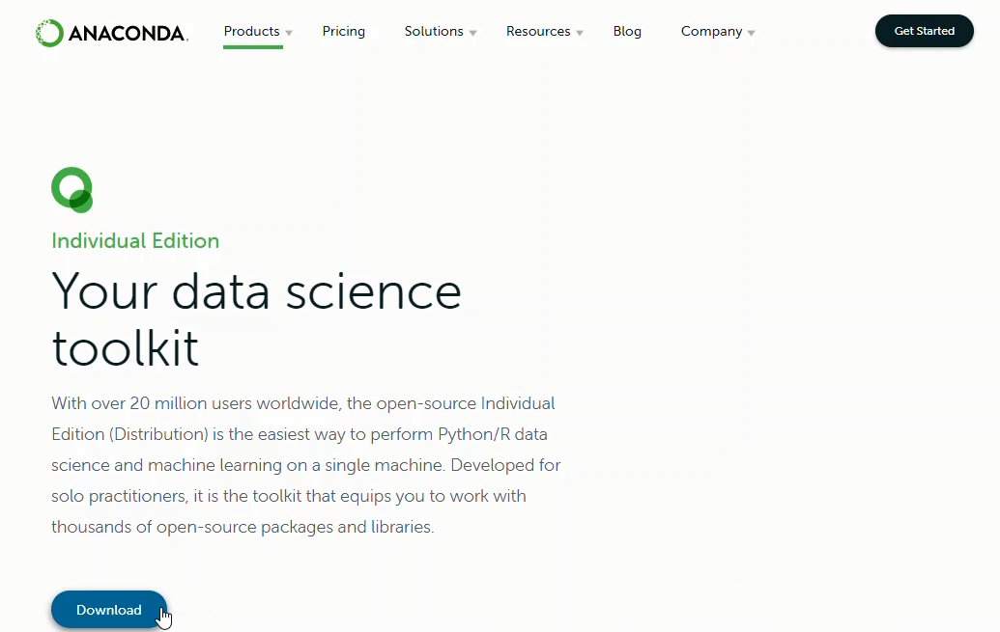
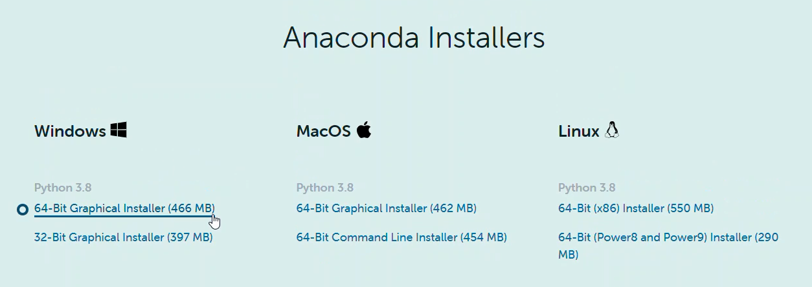
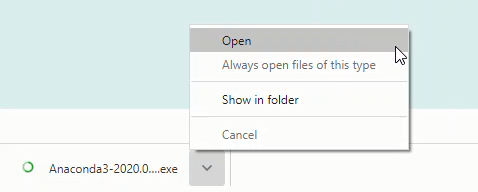
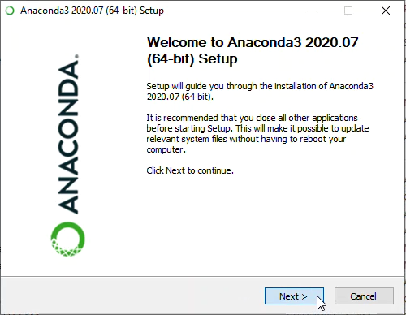

Installing Anaconda on Windows
Contents
1.4. Installing Anaconda on Windows#
For problem-solvers, I recommend installing and using the Anaconda distribution of Python.
This section details the installation of the Anaconda distribution of Python on Windows 10. I think the Anaconda distribution of Python is the best option for problem-solvers who want to use Python. Anaconda is free (although the download is large which can take time) and can be installed on school or work computers where you don’t have administrator access or the ability to install new programs. Anaconda comes bundled with about 600 Python packages pre-installed including NumPy, Matplotlib, and SymPy. These three packages are useful for problem-solvers and will be discussed in subsequent chapters.
Steps:#
Visit Anaconda.com
Select Products / Individual Edition
Scroll down to the Anaconda Installers section
Download the Windows 64-Bit Graphical Installer
Open and run the .exe installer
Use the Windows Start Menu, open the Anaconda Prompt and run some Python code
1. Visit Anaconda.com#
Go to the following link: Anaconda.com
2. Select Products / Individual Edition#
On the Anaconda.com home page, select Products from the upper menu, then select Individual Edition.

3. Scroll down to the Anaconda Installers section#
Scroll down the Individual Edition page to the Anaconda Installers section.

4. Download the Windows 64-Bit Graphical Installer#
In the Windows section of the page, select the 64-Bit Graphical Installer. Click the link to download the installer.

5. Open and run the .exe installer#
Open the .exe installer file you just downloaded to run it. You will need to accept a License Agreement. I recommend that you keep all the default options during the installation.

